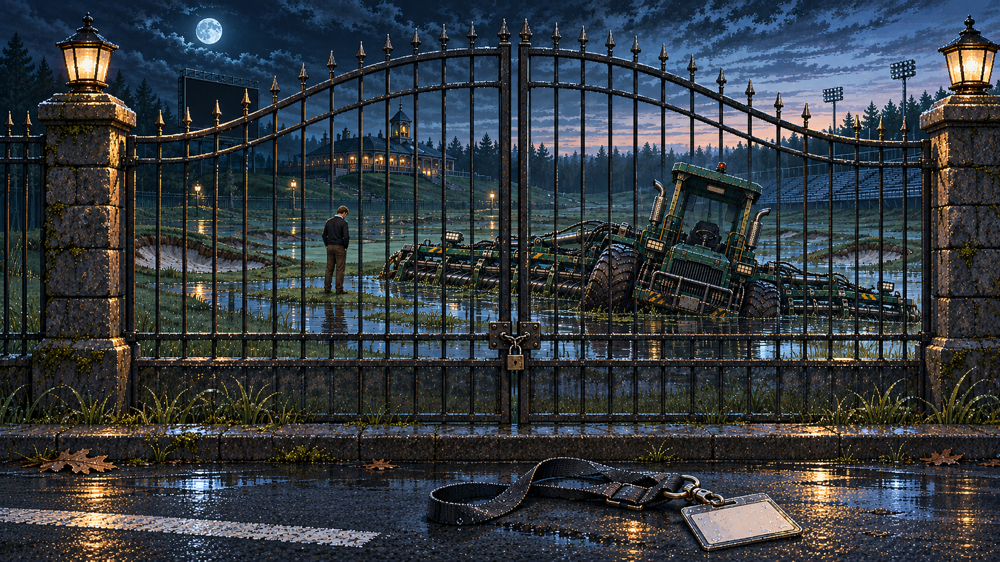
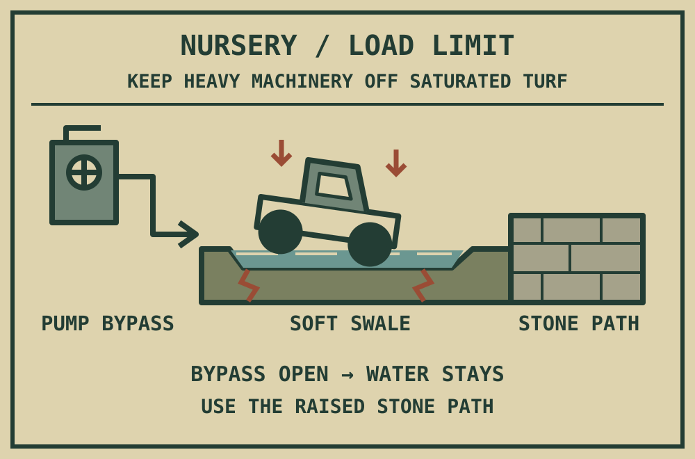

After the first pass, Joe returns fast through the reeds. Watch for shaking grass and listen for the rustle. He can charge from east, west, or along the eastern corridor from north and south. Move across his committed path.
18 / CHAMPIONSHIP GROUNDS
The Final Cut
The course is immaculate.
You are the last thing out of place.
Rough conceals you when crouched, but the reels cut it away. Running footsteps give away your position. The bunker, pump shelter and starter’s pavilion hold.
Open the pump bypass. When the nursery swale fills, reach the pavilion bell and call Joe across the weak ground. Saturated turf slows you too: use the dry bank. North is the public road; south is the overlook.

THE FINAL CUT COMPLETE · YOU SURVIVED
- Route taken
- Round played
- What leaves with you
Optional replay challenges
These are personal goals for another round. Your escape is already complete. Only a run begun at the arrival checkpoint can earn a challenge; retries and reloads retain its history.
Choose your next round
Thank you for playing Rough Cut.
- Concept & direction
- The project creator
- Development
- Built in this project with Codex
- Story illustrations
- Created with OpenAI image generation
- 3D runtime
- Three.js contributors · MIT License
The course has your badge. It does not have you.
NIGHT ORDER / AUTOMATED MESSAGE
Next review: scheduled.
Recipient: former Associate Product Analyst.
DELIVERY FAILED
ACCOUNT CLOSED
You are already on the road.
Preparing the championship grounds…
Checkpoints save on this device.
Controls & comfort
Recovered maintenance records

The nursery swale never drained properly. Heavy tournament equipment must stay off saturated turf. The bypass latches open. The stone service path remains above the water.